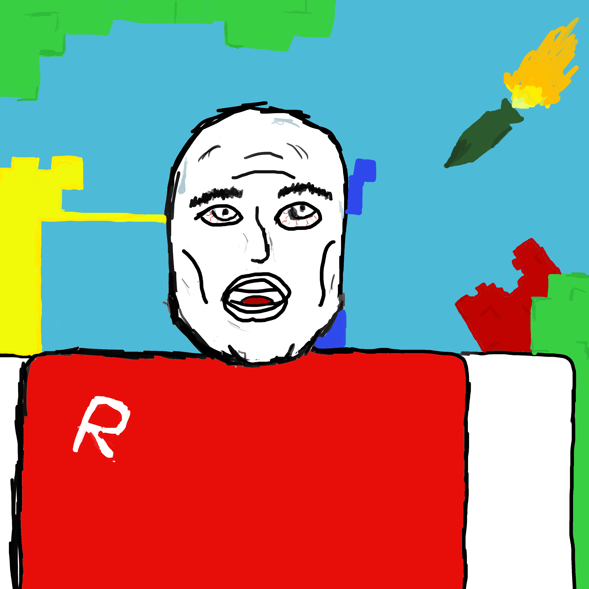

Riley Saunders Portfolio 2024
text
About Me
Hi, my name is Riley Saunders, I am a 16 year old artist living in Auckland, New Zealand.
I recently began drawing as a means to express my emotions during a challenging period in my life.
Though initially I drew to vent my emotions and calm myself down, I have found myself basically only drawing in my spare time, and now I want to expand my skills and knowledge of art.
I used to draw lots of pencil only drawings, as shown underneath, but recently have picked up digital art using a wacom tablet.
I mainly draw landscapes and characters or people from my favourite fictional worlds (mostly Lord of the Rings).
I also love coding, this website being a example of something I coded.
Looking forward, I hope to develop more skill within digital art and technologies through the Media Design School. For any inquiries my email is rileysaunders266@gmail.com
Some of my Work
Battle For Orthanc

Gandalf

Rangitoto

Rohan Mountains

Themosticles

roblox
